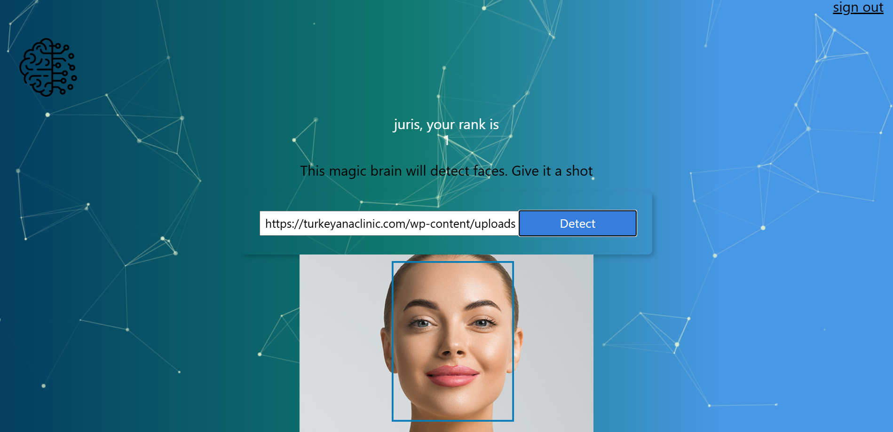

Face Recognition
This full-stack application is built with React on the front end, Node.js on the back end, and PostgreSQL as the database. Users can input an image URL, which triggers an API call to Clarifai's face recognition AI model. The model processes the image, detects any human faces, and highlights them, creating an intuitive and interactive experience for visual face detection. Overall application is fully functional but work is ongoing for more improvements.
